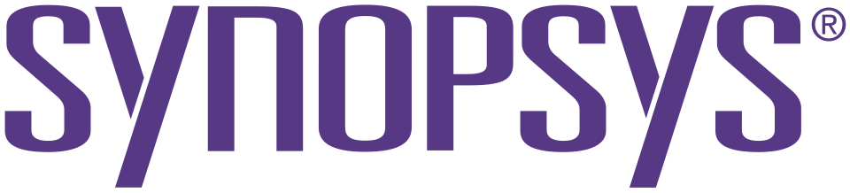

시놉시스 Synopsys
시놉시스(Synopsys)는 실리콘 칩과 전자 시스템의 설계·검증에 쓰이는 전자설계자동화 도구, 재사용 가능한 설계 지식재산, 관련 서비스를 공급하는 미국 기업이다.
최종 업데이트

시놉시스는 어떤 브랜드인가
이 회사는 반도체 설계·제조 산업을 대상으로 디지털·아날로그 회로 구현, 시뮬레이션, 디버깅 환경을 제공한다. 사업 범위는 칩 설계뿐 아니라 전자 시스템 수준의 설계와 검증, 재사용 가능한 설계 지식재산까지 포괄한다.
2024년 기준 Cadence Design Systems, Siemens EDA와 함께 세계 EDA 시장의 약 75%를 차지하는 3개 회사에 속하며, 세계에서 12번째로 큰 소프트웨어 회사로 등재된 기업이다. 반도체 설계 IP 분야에서는 매출 기준 ARM Holdings에 이어 두 번째이고, IP 라이선스 매출 시장점유율에서는 선두이다.
본사는 미국 서니베일에 있으며 북미·아시아·유럽에 걸쳐 사무소를 운영한다.
시놉시스는 어떻게 시작되고 성장했나
1986년 Aart de Geus, David Gregory, Alberto Sangiovanni-Vincentelli, Bill Krieger가 노스캐롤라이나주의 Research Triangle Park에서 설립했다. 처음에는 General Electric의 Advanced Computer-Aided Engineering Group이 개발한 논리 합성 기술을 개발·판매하기 위해 Optimal Solutions라는 이름으로 출범했다.
1987년 현재 이름으로 바꾸고 캘리포니아주 마운틴뷰로 이전했다. 1992년 2월 기업공개를 통해 상장했으며, 2017년부터 Nasdaq-100과 S&P 500 지수 구성 종목이다.
시놉시스의 브랜드 아이덴티티는 무엇인가
칩 구현·검증용 EDA와 재사용 설계 IP에 공학 시뮬레이션 역량을 결합해 칩과 시스템 설계를 함께 다루는 점이 구별점이다.
시놉시스의 대표 제품과 서비스는 무엇인가
제품군에는 디지털·아날로그 회로 구현 도구, 시뮬레이터, 칩과 컴퓨터 시스템 설계를 지원하는 디버깅 환경이 포함된다. Ethernet과 UALink를 지원하는 모듈 등 데이터센터 연결과 AI 가속기 기반 시설에 쓰이는 재사용 가능 칩 설계 IP도 공급한다.
2020년 디지털 칩 구현용 설계 공간 최적화 제품 DSO.ai를 내놓은 뒤 IC 검증·시험과 다른 용도의 AI 도구로 범위를 넓혔다. 2023년에는 Microsoft와 협력해 OpenAI의 대규모 언어 모델을 칩 설계 지원에 활용하는 Copilot을 발표했다.
시놉시스는 지금 어떤 상태인가
2024년 1월 Sassine Ghazi가 Aart de Geus의 뒤를 이어 CEO에 취임했고, de Geus는 집행회장으로 전환했다. 2025년 7월 17일 엔지니어링 시뮬레이션 소프트웨어 기업 Ansys 인수를 완료했으며, 이는 회사 역사상 최대 인수이다.
인수 뒤 구조조정의 하나로 2025년 11월 인력 약 10% 감축과 일부 사업장 폐쇄 방침이 보도됐으며, 감원은 주로 2026 회계연도에 진행할 계획이다.
시놉시스 로고는 어떻게 변해왔나
자주 묻는 질문
시놉시스는 어느 나라 브랜드인가요?
시놉시스는 미국의 기술·전자 브랜드입니다.
시놉시스는 언제 설립되었나요?
시놉시스는 1986년 설립되었습니다.
시놉시스의 브랜드 아이덴티티는 무엇인가요?
칩 구현·검증용 EDA와 재사용 설계 IP에 공학 시뮬레이션 역량을 결합해 칩과 시스템 설계를 함께 다루는 점이 구별점이다.
시놉시스의 대표 제품은 무엇인가요?
제품군에는 디지털·아날로그 회로 구현 도구, 시뮬레이터, 칩과 컴퓨터 시스템 설계를 지원하는 디버깅 환경이 포함된다.
시놉시스는 현재 어떤 상태인가요?
2024년 1월 Sassine Ghazi가 Aart de Geus의 뒤를 이어 CEO에 취임했고, de Geus는 집행회장으로 전환했다.
시놉시스의 창업자는 누구인가요?
시놉시스의 창업자는 Aart de Geus, Alberto Sangiovanni-Vincentelli입니다(위키데이터 기준).
시놉시스의 본사는 어디에 있나요?
시놉시스의 본사는 마운틴뷰에 있습니다(위키데이터 기준).
출처와 검증
시놉시스 관련 참고: 공식 웹사이트 · 위키데이터 Q2303478 · 한국어 위키백과 · 영어 위키백과. 브랜드명은 한글과 원어를 함께 표기하되 데이터에 없는 표기는 만들지 않습니다. 기원 국가·설립연도는 검수된 정의문에서 확인된 값을 우선하고, 없을 때만 공식 웹사이트 URL이 일치하는 위키데이터 개체의 값을 씁니다. 위키데이터 값은 2026-09-12 기준입니다.